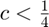

Модификации модели Мальтуса
Рассмотрим дифференциальное уравнение, описывающее изменение численности популяции:
где предполагается, что функция непрерывна.
Contents
Логистическое уравнение с постоянным отловом
Для функции уравнение примет вид:
Теперь добавим термин постоянного отлова :
Анализ уравнения показывает, что:
- При  существуют две положительные стационарные точки. Больший корень устойчив, меньший - неустойчив.
- При существует одна неустойчивая стационарная точка.
- При стационарных точек нет. В этом случае популяция вымирает за конечное время.
c = .23; x_0 = logspace(-1.5, 0.8, 35); T = 2; tspan = [0, T]; [t, x] = ode45(@(t, x) x - x.^2 - c, tspan, x_0); figure(2); plot(t, x, '-k'); % Отображение стационарных точек: x_star = roots([-1 1 -c]); for k = 1 : length(x_star) if isreal(x_star(k)) line([0, T], [x_star(k), x_star(k)], ... 'Linestyle', '--', 'Color', 'red', 'LineWidth', 1.6); end end axis([0, T, 0, min(1, max(x_0))]) title('$\dot{x} = x - x^2 - c$', 'Interpreter', 'latex', 'FontSize', 14); subtitle(['$c = ' num2str(c) '$'], 'Interpreter', 'latex'); xlabel('$t$', 'Interpreter', 'latex', 'FontSize', 14); ylabel('$x$', 'Interpreter', 'latex', 'FontSize', 14)
Логистическое уравнение с мягким отловом
Добавим отлов, пропорциональный текущей численности популяции: . Тогда уравнение примет следующий вид:
Анализ уравнения показывает:
- Существует неустойчивая стационарная точка .
- Существует устойчивая стационарная точка .
В стационарной точке отлов равен , который достигает максимума при и равен .
theta = .5; x_0 = logspace(-2, 0.5, 35); T = 2; tspan = [0, T]; [t, x] = ode45(@(t, x) (1 - theta)*x - x.^2, tspan, x_0); figure(3); plot(t, x, '-k'); % Отображение стационарных точек: line([0 T], [1 - theta, 1 - theta], 'Color', 'red', 'LineStyle', '--', 'LineWidth', 1.6); line([0 T], [0, 0], 'Color', 'red', 'LineStyle', '--', 'LineWidth', 1.6); axis([0, T, 0, min(1, max(x_0))]) title('$\dot{x} = (1 - \theta)x - x^2$', 'Interpreter', 'latex', 'FontSize', 14); subtitle(['$\theta = ' num2str(theta) '$'], 'Interpreter', 'latex'); xlabel('$t$', 'Interpreter', 'latex', 'FontSize', 14); ylabel('$x$', 'Interpreter', 'latex', 'FontSize', 14)